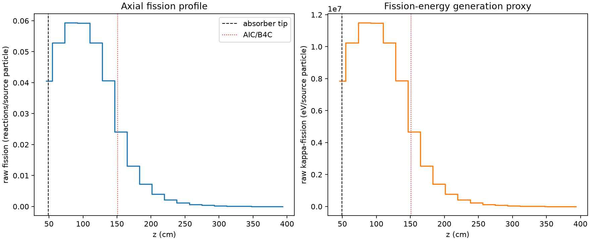
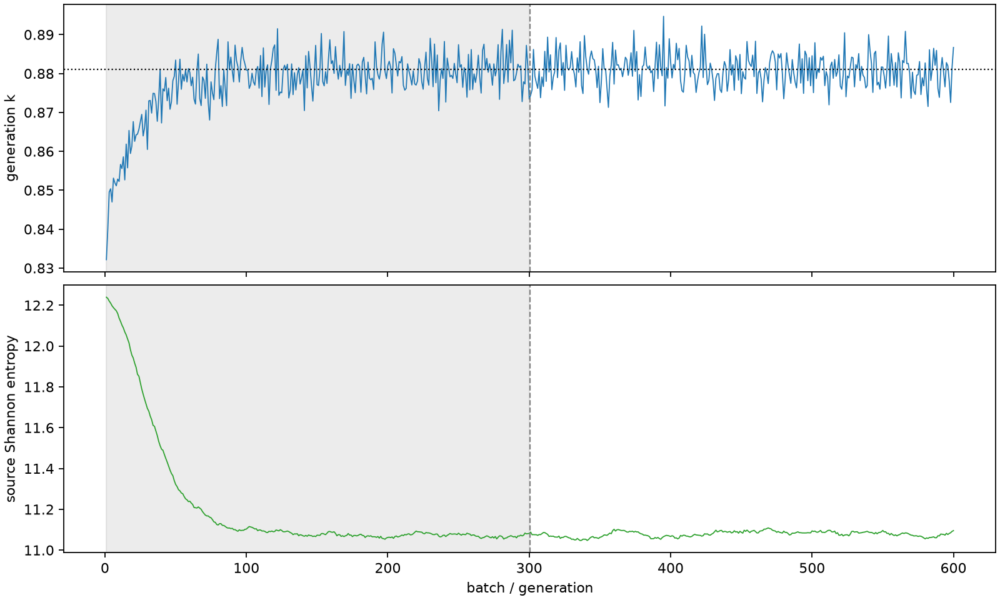

| field | value |
|---|---|
| experiment | V2-STAGE_128_OGRENCI_03-0015 |
| k | 0.8810084199837552 |
| MC standard error | 0.00018128581390237496 |
| seconds | 932.8664329419989 |
| acceptance | not_assessed |
| convergence | review_required |
Completed is output integrity only; physical and statistical review required. Zero tallies do not prove zero production or zero uncertainty.
| diagnostic | value |
|---|---|
| geometric fuel voxels | 5280 |
| zero fission tally voxels | 0 |
| low signal fuel voxels | 888 |
| low signal fission share | 0.00021824039967528855 |
| low signal kappa share | 0.00021826127144429359 |
| important fission share | 0.9500852898718352 |
| previous filter included | 4392 |
| duration estimate s | 1562.5173488400023 |
| actual minus estimate s | -629.6509158980034 |
| fission relative MC error | statistics |
|---|---|
| all_geometric_fuel | {"voxels": 5280, "positive_mean_voxels": 5280, "zero_mean_voxels": 0, "undefined_relative_error_voxels": 0, "median": 0.030808031965252815, "p95": 0.4382057232240685, "maximum": 0.9517306263583765} |
| low_signal | {"voxels": 888, "positive_mean_voxels": 888, "zero_mean_voxels": 0, "undefined_relative_error_voxels": 0, "median": 0.3485827532617241, "p95": 0.660898823510339, "maximum": 0.9517306263583765} |
| important_95pct | {"voxels": 2070, "positive_mean_voxels": 2070, "zero_mean_voxels": 0, "undefined_relative_error_voxels": 0, "median": 0.007773371661397164, "p95": 0.014601142586153783, "maximum": 0.016834216331135805} |
| outside_previous_filter | {"voxels": 888, "positive_mean_voxels": 888, "zero_mean_voxels": 0, "undefined_relative_error_voxels": 0, "median": 0.3485827532617241, "p95": 0.660898823510339, "maximum": 0.9517306263583765} |
| kappa_fission relative MC error | statistics |
|---|---|
| all_geometric_fuel | {"voxels": 5280, "positive_mean_voxels": 5280, "zero_mean_voxels": 0, "undefined_relative_error_voxels": 0, "median": 0.03076081548896359, "p95": 0.4375933102173382, "maximum": 0.9511671223855942} |
| low_signal | {"voxels": 888, "positive_mean_voxels": 888, "zero_mean_voxels": 0, "undefined_relative_error_voxels": 0, "median": 0.3482358510875939, "p95": 0.6591471521931689, "maximum": 0.9511671223855942} |
| important_95pct | {"voxels": 2070, "positive_mean_voxels": 2070, "zero_mean_voxels": 0, "undefined_relative_error_voxels": 0, "median": 0.007760551349915344, "p95": 0.014577588363836123, "maximum": 0.01680506931130798} |
| outside_previous_filter | {"voxels": 888, "positive_mean_voxels": 888, "zero_mean_voxels": 0, "undefined_relative_error_voxels": 0, "median": 0.3482358510875939, "p95": 0.6591471521931689, "maximum": 0.9511671223855942} |
| axial bin | fission share | kappa-fission share |
|---|---|---|
| 1 | 0.11308058524913152 | 0.11306547763182845 |
| 2 | 0.14724306594767822 | 0.14724350631692812 |
| 3 | 0.1653217667334617 | 0.1653221475388718 |
| 4 | 0.16499942632036596 | 0.1649998826130445 |
| 5 | 0.14732355239309117 | 0.14732389686615358 |
| 6 | 0.11322888240716751 | 0.11322918588507293 |
| 7 | 0.06709804425781205 | 0.06710280053701696 |
| 8 | 0.03655349933991758 | 0.03655718635829969 |
| 9 | 0.0202491172865874 | 0.02025121868994644 |
| 10 | 0.011097798524880733 | 0.011099008045256575 |
| 11 | 0.00610378854997629 | 0.006104437533127436 |
| 12 | 0.0033469987399915913 | 0.0033473620847309024 |
| 13 | 0.001877047745322583 | 0.0018772250093570708 |
| 14 | 0.0010997825333297318 | 0.0010998748736744167 |
| 15 | 0.000657802231145712 | 0.0006578758765490927 |
| 16 | 0.00037273315719580383 | 0.000372776695112476 |
| 17 | 0.0001975486972925779 | 0.0001975668569272094 |
| 18 | 9.129657831397978e-05 | 9.12966379903335e-05 |
| 19 | 4.1136183946122366e-05 | 4.114273839068434e-05 |
| 20 | 1.612712339204672e-05 | 1.6131211721304637e-05 |
Histories include the inactive-to-active transition at batch 300. kappa-fission approximates fission energy production, not total heat deposition.

